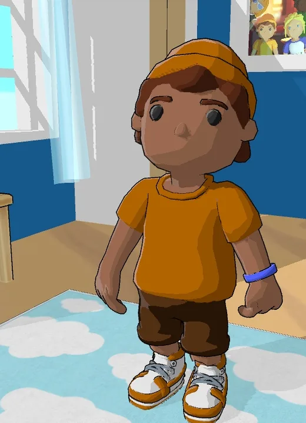
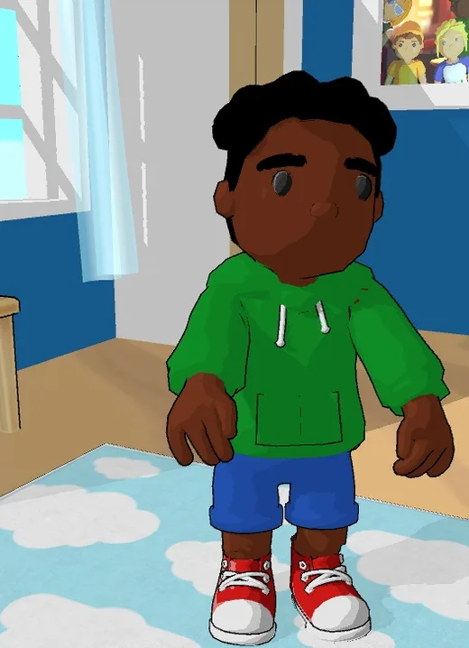
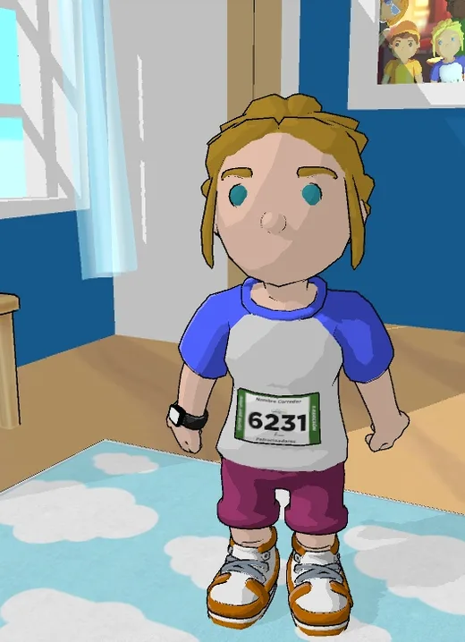
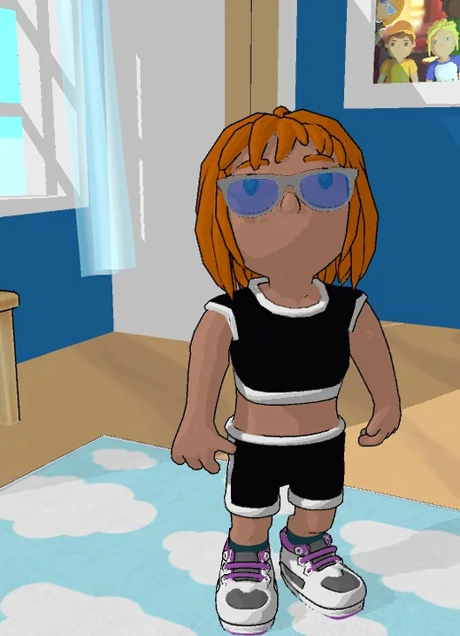
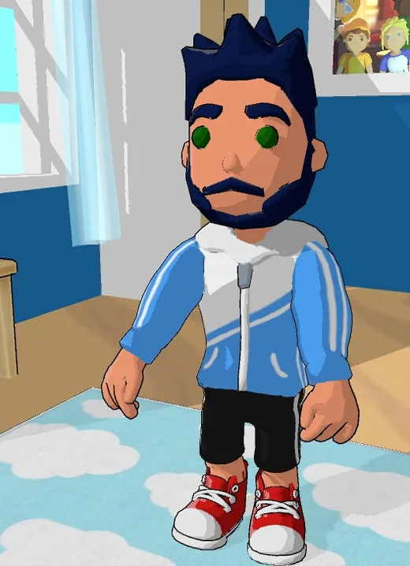
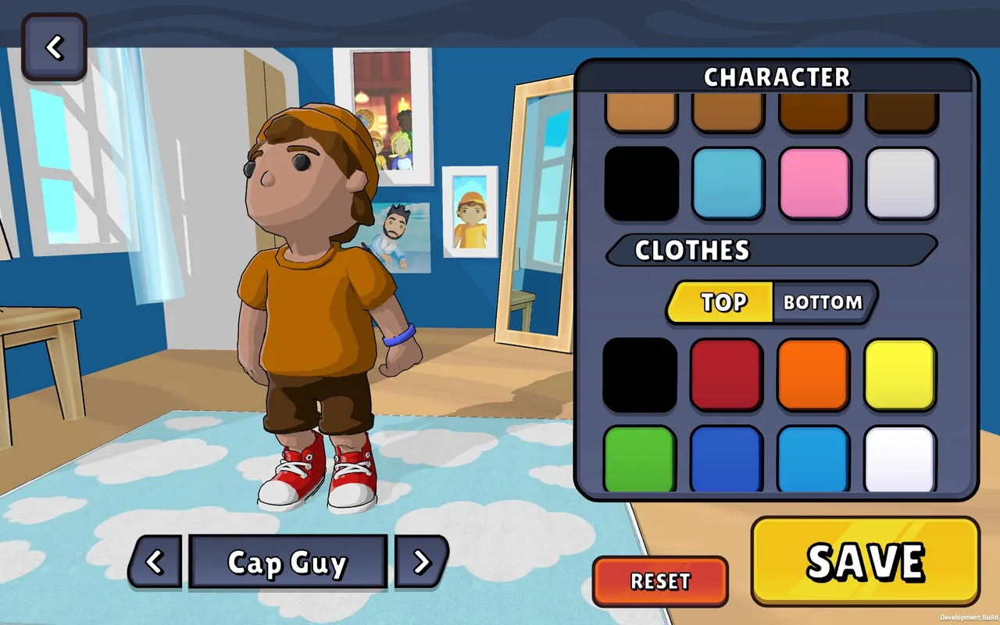
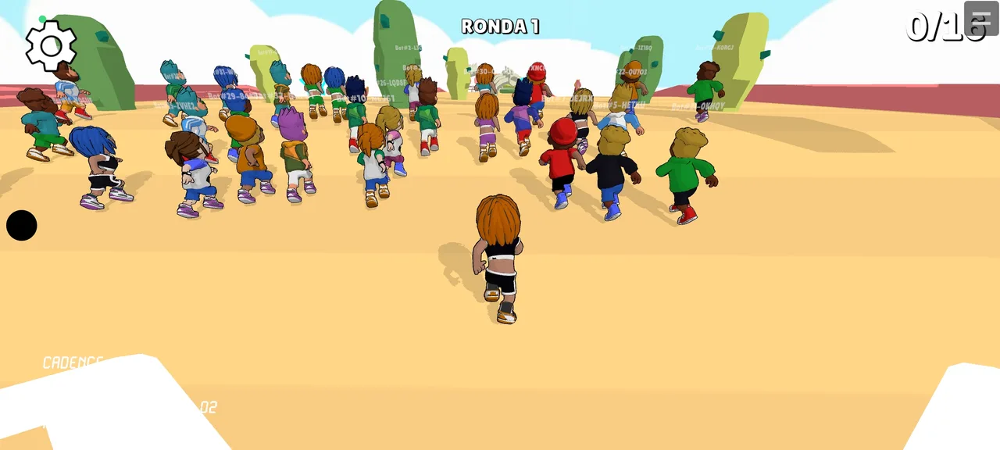
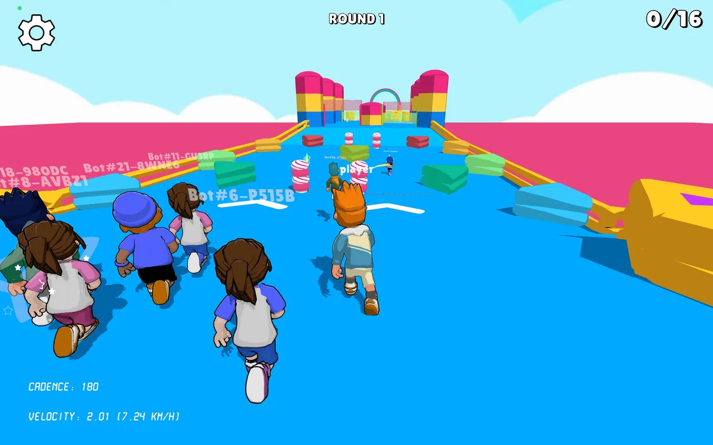
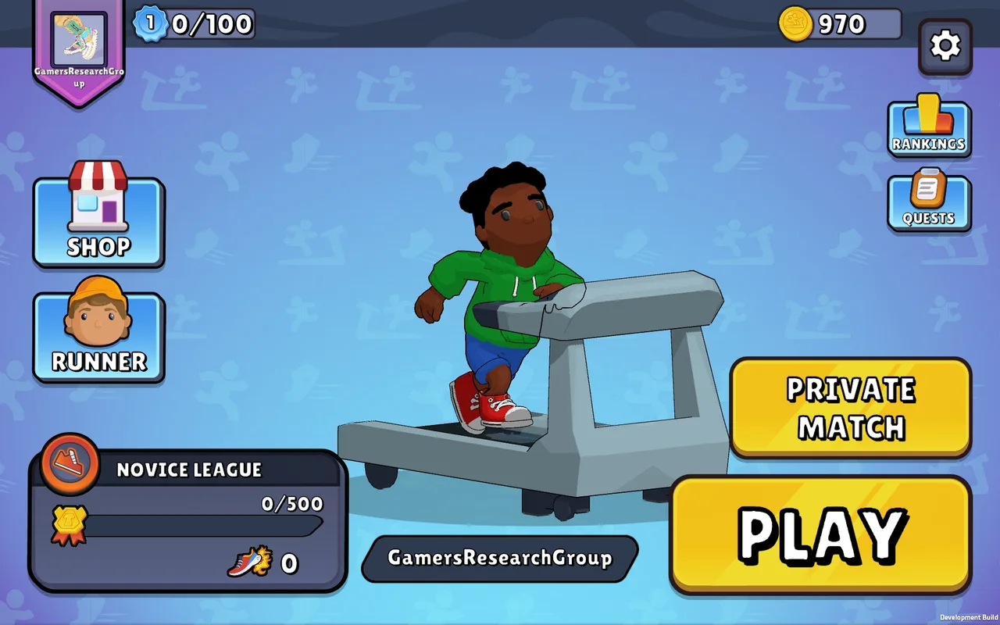

Fitoon
Un juego de carreras de obstáculos para correr en cinta. Sin mando ni wearables: solo el móvil delante y tu propia cabeza.
- Mi rol
- Programación AR, personajes 3D, arte de UI
- Equipo
- GameRS, grupo de investigación en videojuegos
- Hecho con
- Unity, C#, seguimiento facial de ARCore, Blender
- Plataforma
- Android
El reto
Correr en cinta aburre rápido, y las apps pensadas para ello son sobre todo simuladores. Juegos de fitness como Ring Fit Adventure necesitan hardware extra. Queríamos un juego que cualquiera pudiera jugar solo con el móvil, inspirado en carreras multijugador como Fall Guys.
Cómo tu cabeza se convierte en un mando
Si corres más rápido, tu personaje también. Si miras a un lado, se mueve hacia allí. Funciona incluso corriendo en el sitio, sin cinta.
Mi trabajo
- Desarrollé el control por seguimiento facial en AR, incluida la estimación de cadencia y dirección.
- Diseñé y modelé todos los personajes en Blender, con un estilo low-poly pensado para móvil.
- Programé el editor de personajes: skins, colores y zapatillas.
- Dibujé el arte de la interfaz.
- El problema más difícil: la cadencia con FFT. El ruido en la señal del seguimiento de la cabeza podía dar frecuencias de paso erróneas, así que acabamos buscando formas de suavizarla.
- Bots entrenados con machine learning que corren junto al jugador.
- Una versión multijugador local con P2P por wifi. La latencia era demasiado alta, así que por ahora se decidió seguir con bots.
- Integración con gimnasios, medallas y rankings, globales o por gimnasio.
Personajes
Diseñé y modelé todos los corredores en Blender, en low-poly y fáciles de leer en la pantalla de un móvil.






En el juego



Resultados
- Presentado en el Guerrilla Game Festival 2024.
- Papers mencionados en la página del proyecto en GameRS.